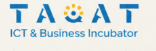

مساحات عمل مشتركة
بيئة للعمل والإنتاج وتبادل الخبرات.
حكاية حاضنة أعمال وتكنولوجيا معلومات في غزة، آمنت إن المهارة بتحتاج بيئة تساندها، وخطوة توصلها لفرصة.

طاقات هي حاضنة أعمال وتكنولوجيا معلومات في غزة، تهدف إلى تمكين الشباب، وتطوير مهاراتهم، وربطهم بفرص العمل.
الفكرة بتجمع بين التدريب والتطبيق والتشبيك المهني، عشان تتحوّل المعرفة لشغل وإنتاج، ويصير عند الشباب مساحة يتطوّروا فيها.
بدأت طاقات في أبريل 2024، في دير البلح، بمبادرة من شريف نعيم وأمل، زوجته وشريكته، وفريقه.
ليش طاقات؟ لأن المهارات والقدرات موجودة، لكن الوصول للفرص أصعب. ومن هون كانت الحاجة لبيئة مناسبة تساعد الشباب على التعلّم والعمل والاستمرار.
«المهارات موجودة… والفرص بدها دعم.»
مسار بيربط المهارة بالفرصة: تدريب، وبعده تطبيق، وبعده تشبيك مهني. خطوات باتجاه الإنتاج والاستقلال المهني.
بناء المعرفة وتطوير المهارات.
تحويل المعرفة لتجربة عملية.
ربط المهارات بالعمل والإنتاج.
دعم يجمع بين البيئة المناسبة،
والمهارة والتطبيق والشراكة.
بيئة للعمل والإنتاج وتبادل الخبرات.
تطوير الخبرات والمهارات الرقمية.
تعلّم يرتبط بالتطبيق العملي.
تطوير قدرة المستقلين على العمل والإنتاج.
مساندة الأفكار وتطوير المشاريع.
تشبيك المهارات وربطها بالفرص.
طاقات جديدة تتعلّم وتجرّب.
بداية المسار المهني وتطويره.
مساحة للعمل والإنتاج.
أفكار تتحوّل إلى عمل.
تركيز على المهارات التقنية والعملية، وتطوير الأفكار والمشاريع، حتى تكون المعرفة قابلة للاستخدام في الشغل.
من المعرفة للتطبيقات العملية، خطوة خطوة.
يحكي العرض عن دعم مهني واقتصادي رغم التحديات، وتعزيز قدرة الشباب على الإنتاج والابتكار.
تعلّم ← تطبيق عملي ← فرصة عمل
15 شريحة بتفاصيل الحكاية. تنقّل من أسهم العرض، أو افتحه بحجم كامل.
المحتوى مبني على عرض طاقات التعريفي الذي أعدّه فريق جَمْرَة، دون إضافة أرقام أو نتائج غير واردة فيه.
تابعوهم وكونوا جزءًا من الحكاية.
@taqat.gaza